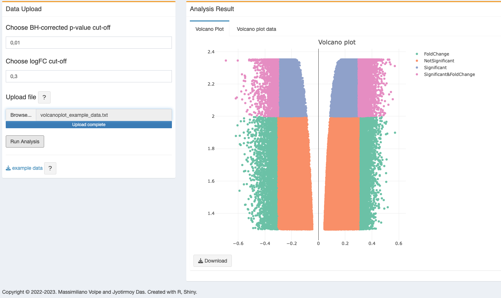
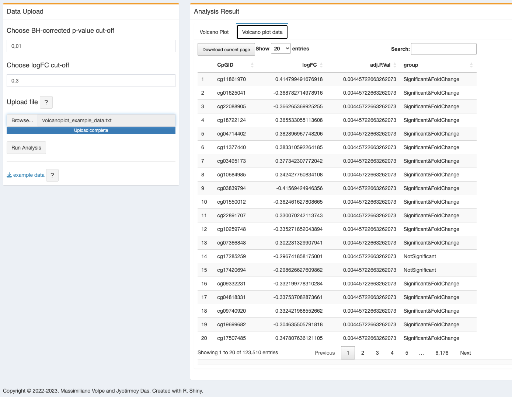

6 Volcano plot
Volcano plot is a nice tool to visualize in a two-dimensional way for differentially methylated CpG site or differentially expressed genes using the statistical p-values as well as the fold change value. Like a volcano, the plot can show the significant or insignificant data in a scatter plot manner. Here with methylR, we used plotly output to visualize the volcano plot to see the CpG or gene name (if the data from the differential analysis) with their respective p-values (adjusted p-values) and the logFC (or mean methylation difference).
6.1 How to use
6.1.1 Data upload & Parameters setup
6.1.1.1 Data upload
- User needs to upload a text (tab-delimited) file with adjusted p-values and logFC values. At present, user can use the DMCs data file directly generated from the main analysis (methylysis section Chapter 2).
- To setup the adjusted p-value, user can change the cut-off. Default is setup to 0.01.
- LogFC cut-off can also be changed as per user requirement. Default is setup to 0.3.
- After the file upload and setting up the cut-off for adjusted P-value and logFC, click the “Run Analysis” button.
6.2 Analysis result
6.2.1 Volcano plot
- The figure will generated as soon as the computation finishes. However, it might takes some more time depending on the size of the file. If user upload a file with 750K rows, it will take 3-5 minutes to generate the figure See Chapter 15. It is noteworthy that this big data in volcano plot, may be unstable in the browser.
- User can download the plot as figure (same as before) and the dynamic figure as a html file.
Please note displaying of the volcano plot will take some time, even after the warning disappears. Please wait for 1-2 minutes to get the visualization. The same may happen to the volcano plot data table.

Volcano plot figure colors annotation- , , or
- On the right tab, user can also see the volcano data table which is useful when they are using the full dataset from the main analysis result (methylysis section).
6.2.2 Volcano data
One data table will be generated using the input data and will have a column marked with , , or depends on the adjusted p-value and logFC cut-off.

6.3 R packages used
TO ALL OUR USERS, IF YOU ARE EXPERIENCING ANY TROUBLE WITH THE APP, BEFORE SENDING THE BUG REPORT, PLEASE RESTART THE DOCKER CONTAINER AND TRY AGAIN.↩︎